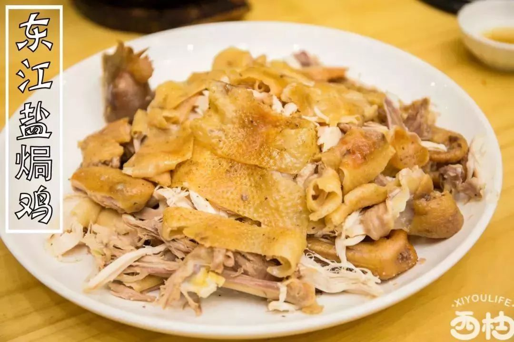

梅菜扣肉
麻陂肉丸
客家酿豆腐
白切胡须鸡
八宝全鸭
阿嬷叫
东江盐焗鸡
梅菜扣肉具体起源时间已无可考证。梅菜是广东客家特产，以鲜梅菜为原料经腌制后再脱盐等工艺制成的产品。梅菜历史悠久，闻名中外，是岭南三大名菜之一，为岭南著名传统特产，历史上作为宫廷食品而被称为“惠州贡菜”。民间用新鲜的梅菜经凉晒、精选、飘盐等多道工序制成，色泽金黄、香气扑鼻，清甜爽口，不寒、不燥、不湿、不热，有增强消化，清热解暑，消滞健胃，降脂降压的功效。悠久的历史，独特的风味和功效，以及近千年的传播，铸就了“惠州梅菜”的盛名。有古诗描述称：“苎萝西子十里绿，惠州梅菜一枝花”，而惠州被国务院授予“中国梅菜之乡”的称号。
麻陂肉丸是广东省惠州市的一道传统名菜，属于粤菜系；该菜品相传有100多年历史，因选料制作独特，采用祖传秘笈，口感爽滑、肉质鲜美而远近闻名，主要分布在博罗县县城及和博东地区各镇，还远销深港澳等地。2008年，麻陂肉丸已经成为县级非物质文化遗产名录，列入惠阳区首个区级非物质文化遗产名录，并已被列入惠州市非物质文化遗产名录。
客家酿豆腐也称为肉末酿豆腐、东江酿豆腐，是客家名菜之一，据说与北方的饺子有关。通常将油炸豆腐或白豆腐切成小块，在每小块豆腐中央挖一个小洞，用香菇、碎肉、葱蒜等佐料填补进去，然后用砂锅小火长时间煮，食时再配味精、胡椒等调料即可。
“客家酿豆腐”之所以独具特色，与它严格的制作工艺分不开。“酿”是一个客家话动词，表示“植入馅料”的意思，“酿豆腐”即“有肉馅的豆腐”之意。客家酿豆腐味道鲜美，在白嫩的豆腐中酿入肉馅渊鱼肉、虾米等，增加了口感，更有嚼头。
客家酿豆腐成菜后，鲜嫩滑香，营养丰富。东江酿豆腐源于古代中原人包饺子的习惯，客家先民原是中原汉人，东江酿豆腐是岭南文化和中原文化交融的产物。
2015年，客家酿豆腐烹饪技艺被列入惠州市第六批市级非物质文化遗产名录。
惠阳胡须鸡，又名三黄胡须鸡、龙岗鸡、龙门鸡、惠州鸡，原产于广东省惠阳地区，是我国比较突出的优良地方肉用鸡种。它以种群大、分布广、胸肌发达、早熟易肥、肉质特佳而成为我国活鸡出口量大、经济价值较高的传统商品。与杏花鸡、清远麻鸡一迅被誉为广东省三大出口名产鸡之一，在港澳市场久负盛名。它以领下有张开的胃羽、状似胡须而得名。
八宝全鸭先将新鲜填鸭去除毛和内脏洗净，放入热水中焯过捞出备用。将糯米、虾仁、香菇等八样食材放入锅中蒸熟做成八宝饭，再将填鸭加水和调料煮至九成熟时捞出去骨，将鸭肉与八宝饭一起蒸熟后盛入碗中，浇上鸭汤即可食用。本菜肉质鲜美、饭香绵软、营养丰富，适合各类人群食用。
“阿嬷叫”是惠州最出名、最独特的小吃之一，已有300多年历史。在许多四五十岁以上的惠州人童年记忆里，都少不了阿嬷叫的味道。
阿嬷叫以这是一种以白萝卜丝、虾米、肉粒和已调好味料的面粉浆，用小网篓舀放进沸油锅中慢火煎炸，成小碗状，外酥内软，好吃的阿嬷叫外酥内软，有萝卜的清香而不油腻。
“东江盐焗鸡”是广东的一款名菜。它创于广东东江一带。300多年前的东江地区沿海的一些盐场，有人把熟鸡用纱纸包好放入盐堆腌储，这种鸡肉鲜香可口，别有风味。后来东江首府盐业发达，当地的菜馆争用最好的菜肴款待客人，于是创制了鲜鸡烫盐焗制的方法现焗现食，因此菜始于东江一带，故称这种鸡为“东江盐焗鸡”。
-

- 